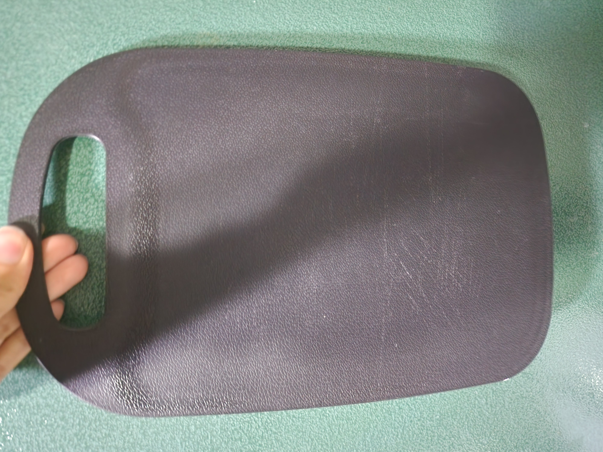
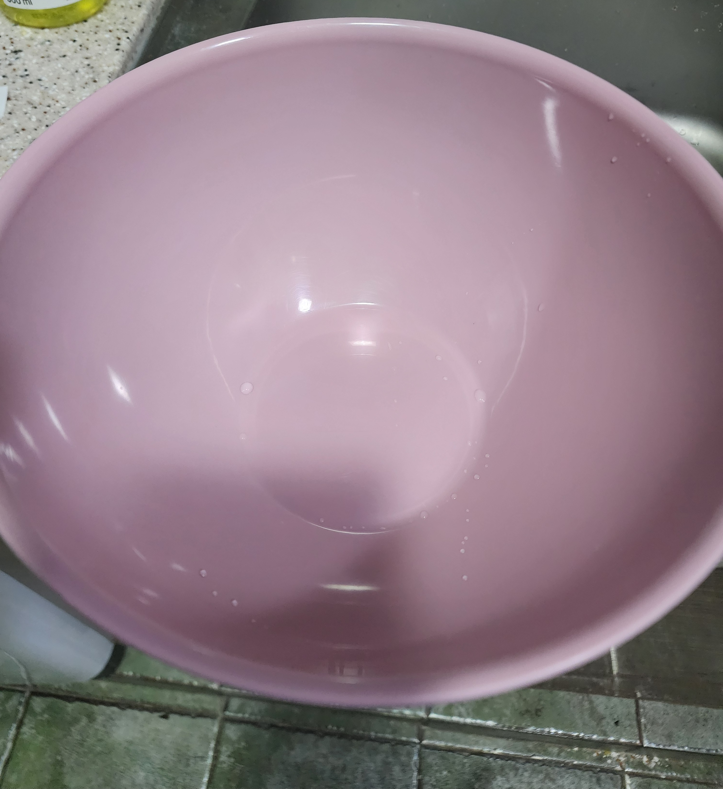

나홀로 중식의 든든한 파트너
화려한 장비는 필요 없습니다. 이 기본적인 도구들만 있다면 충분합니다.

프라이팬
Frying Pan
볶음 요리의 핵심입니다. 열 전도율이 좋고 코팅이 잘 된 팬을 추천합니다.

중식도
Chinese Cleaver
묵직한 무게감으로 재료 손질이 쉽고, 마늘을 한 번에 으깨기 좋습니다.

채칼
Julienne Peeler
감자채 볶음의 필수템. 칼질이 서툴러도 얇고 일정한 채를 썰 수 있습니다.

도마
Cutting Board
가볍고 세척이 쉬운 소재를 선택하면 데일리로 쓰기 좋습니다.

나무 주걱
Wooden Spatula
팬 코팅을 보호하며 볶기에 안성맞춤입니다.

믹싱 볼
Mixing Bowl
재료를 씻거나 양념에 버무릴 때 필수적인 도구입니다.